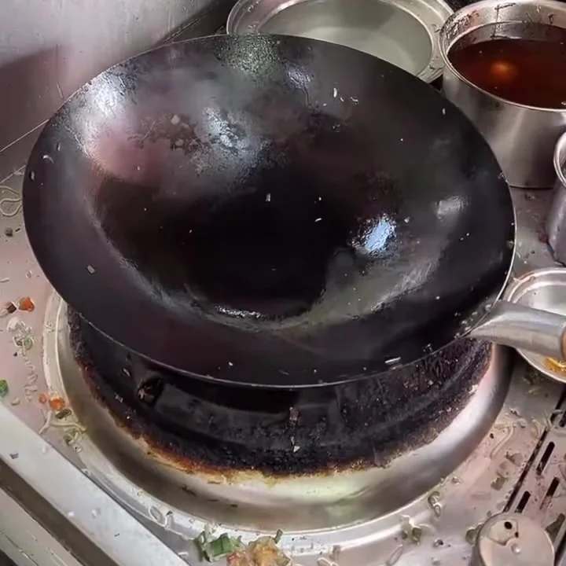
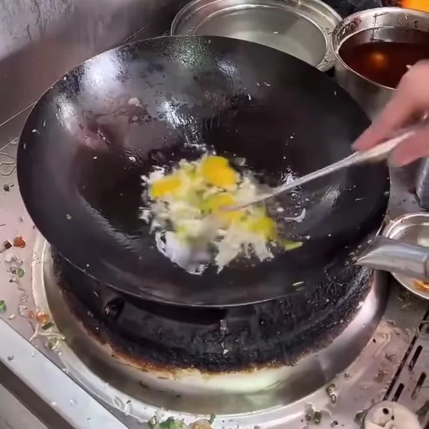
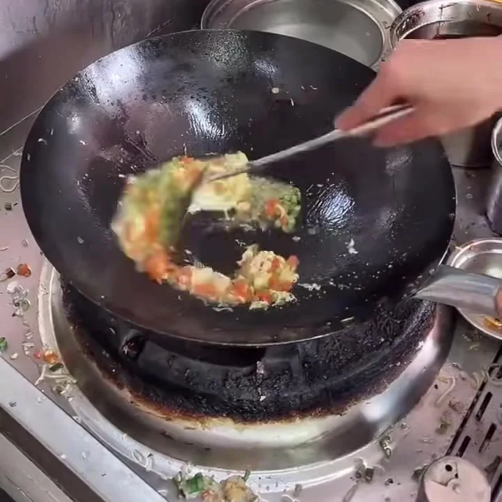
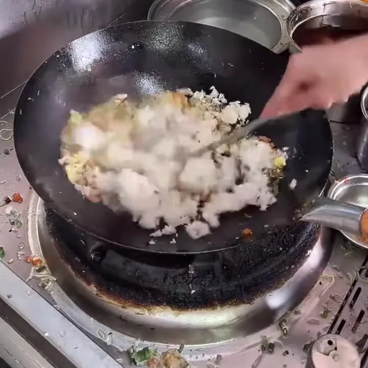

프레임 차분
앞뒤 프레임의 픽셀 차이와 색상 분포 변화를 계산합니다. 다만 볶는 동안 손이 크게 움직여도 같은 동작일 수 있어, 화면 변화가 큰 시점을 그대로 동작의 경계로 보기는 어렵습니다. 다른 방법의 효과를 확인할 때 비교 기준으로 함께 사용합니다.
조리 로봇이 학습할 수 있도록 영상에 동작 구간을 표시합니다.
–진행 중
조리 로봇을 학습시키려면 영상에서 어떤 동작이 몇 초부터 몇 초까지 이어지는지 표시한 데이터가 필요합니다. 로보터블과 연계해, 이 동작 구간의 경계를 찾는 파이프라인을 개발하고 있습니다.
볶기나 끓이기처럼 같은 동작이 반복되는 동안에는 매 프레임을 시각언어모델(VLM)에 보내 추론할 필요가 없습니다. 비슷한 장면을 거듭 판독하는 비용을 줄이기 위해, 다양한 영상 분석 방법으로 동작이 바뀌는 지점을 먼저 추립니다.
변화 후보 주변은 촘촘하게, 그 밖의 구간은 성기게 프레임을 골라 VLM으로 판독합니다. 사람이 표시한 경계와 비교해 필요한 변화를 얼마나 찾았는지, 판독에 쓴 프레임 수와 비용은 얼마인지 함께 평가합니다.




전체 영상의 특징 변화를 살펴 바뀔 만한 시점을 찾습니다.
후보 주변은 촘촘하게, 그 밖의 구간은 성기게 고릅니다.
선별한 장면에서 조리 동작과 재료의 상태를 읽습니다.
판독 결과를 구간으로 묶고 경계의 불확실성을 표시합니다.
앞뒤 프레임의 픽셀 차이와 색상 분포 변화를 계산합니다. 다만 볶는 동안 손이 크게 움직여도 같은 동작일 수 있어, 화면 변화가 큰 시점을 그대로 동작의 경계로 보기는 어렵습니다. 다른 방법의 효과를 확인할 때 비교 기준으로 함께 사용합니다.
DINOv2, MobileNet, EmbeddingGemma 같은 사전학습 모델로 프레임의 특징을 숫자 벡터로 바꿉니다. 시간에 따른 벡터의 유사도와 분포 변화를 살피고, PELT와 KTS로 구간이 달라지는 지점을 찾는 실험을 진행하고 있습니다.
고정된 특징 추출 모델의 임베딩과 프레임 차분을 입력으로, 연속된 프레임의 변화를 보는 TCN(시간 합성곱 신경망)을 학습하는 실험도 진행하고 있습니다. 학습한 모델과 PELT·KTS, 일정 간격의 프레임 선택을 같은 판독 프레임 수에서 비교합니다.
제가 맡은 작업은 프레임 선별 방법 조사와 비교 실험 설계입니다. 변화 후보 앞뒤를 얼마나 넓게 볼지, 후보 밖의 구간에도 프레임을 얼마나 배분할지 조건을 나눴습니다. 일정 간격으로 고르는 방식과 비교해, 장면을 덜 읽으면서도 경계를 찾을 수 있는지 확인하고 있습니다.
공통 입력과 실행·평가 코드를 작성하고 실제 VLM 판독을 포함한 시험을 진행했습니다. 선택한 프레임 수, 토큰 사용량과 구간 검출 결과를 함께 기록해 선별 조건에 따른 차이를 비교합니다.
시험 중 예측 구간과 정답 구간을 연결하는 순서에 따라 평가 결과가 달라지는 문제를 찾아 규칙을 수정했습니다. 현재는 이 평가 흐름을 바탕으로 다음 비교 실험을 준비하고 있습니다.
AI 활용 경험 함께 보기